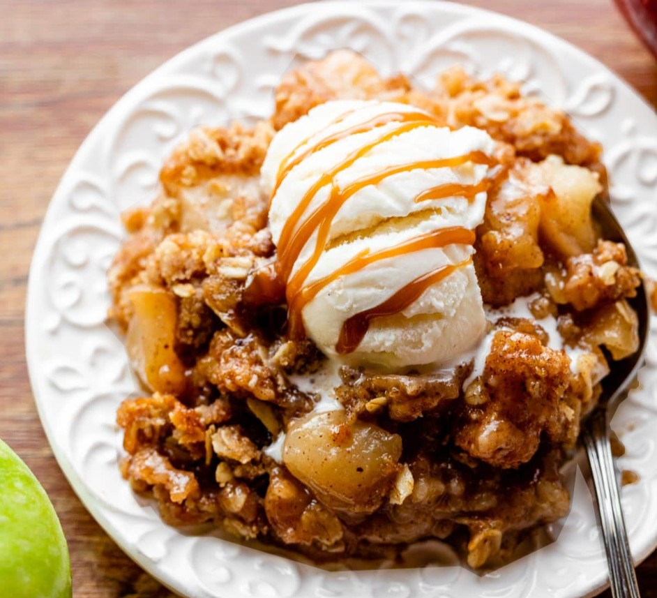

Apple Crisp
An apple crisp is a warm, comforting dessert made with cinnamon‑spiced apples baked under a buttery oat topping. As it cooks, the apples turn soft and sweet while the topping becomes golden and crunchy, creating a cozy treat that’s perfect with a scoop of vanilla ice cream.